Practica 4:Convolucion y coorelacion
INTEGRANTES:
- Garcia Becerril Luis Angel Ian
- Rosales Perez Paola Monserrat
- Betanzos Fernando Melvin Emiliano
Contents
Objetivos:
- Conocer métodos básicos de integración numérica
- Manipulación de instrucciones en MATLAB
- Simular convoluciones y correlaciones de señales continuas
- Simular convoluciones y correlaciones de señales discretas
Introduccion
La integración númerica tiene como objeto calcular el valor númerico de una integral definida y existen diferentes métodos para poder hacerlo.
- EL Teorema Fundamental del Cálculo es uno de ellos, este método junta los estudios de integreación y derivación, determinando así que ambos procesos son inversos.
Matemáticamente El Teorema Fundamental del Cálculo nos dice que si es integrable, y 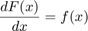 entonces:
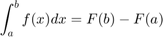
*Ejemplo.
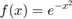

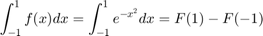
Sin embargo no podemos encontrar algun método para conocer la antiderivada, asi que aproximamos el área y construmos un polinomio.
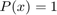
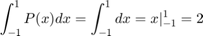
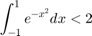
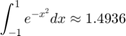
Un método muy común para realizar una integración númerica son las Formulas de Newton-Cotes,éste método consiste en usar un polinomio de aproximación en vez de una la función la cual podria resultar más complicada. Determinando así:
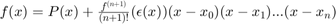
Con base en esto sólo integramos el polinomio con el error, provocando tener varias formulas de Newton-Cotes, y estas van a depender del grado del polinomio que se quiera encontrar.
- Para una n=1 tendremos la Regla del Trapecio.
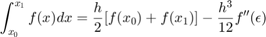
% $
*EJEMPLO
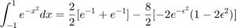
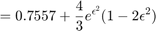
- Para n=2 tendremos la Regla de Simpson.
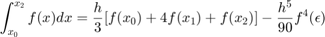
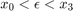
- EJEMPLO
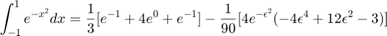
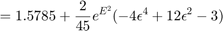
- Para n=3 tendremos la Regla de tres octavos de Simpson.
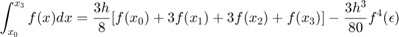
- EJEMPLO
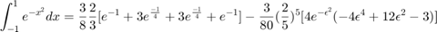
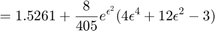
También existen las Formulas cerradas de Newton-Cotes Compuestas, las cuales concisten en subidividir el intervalo de integración en varios segmentos del mismo tamaño.
- Regla Compuesta del Trapecio.
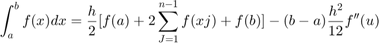
- EJEMPLO
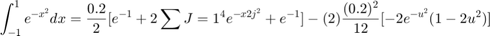
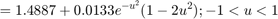
https://www.desmos.com/calculator/fyuqxvl7oe
- Regla Compuesta de Simpson.
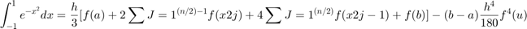
- EJEMPLO% 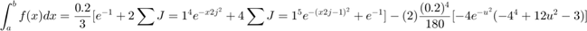$
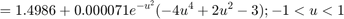
Finalmente se hablara de la Cuadratura Gaussiana, este método nos dice que dada una integral de f(x) evaluada en [a,b] trata de aproximar esta integral por evaluación de la función en determinados puntos por determinadas constantes. Las evaluaciones son a elección pero dichas elecciones tienen restricciones.
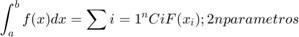
- EJEMPLO
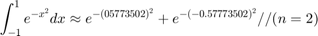
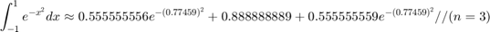

https://www.desmos.com/calculator/9ze7gypnev
Entregable 1 Analitico
c1=@(t) 0.*(t<=-1)+(((t-1)+(2./exp(t+1))).*(t>-1 & t<=0))+((t-((t-2)./exp(1))-1).*(t>0 & t<=1))+((-(t-2)./exp(1)).*(t>1 & t<= 2))+ 0.*(t>2); t=[-2:0.01:2]; plot(t,c1(t))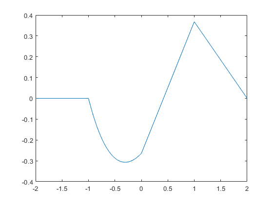
Entregable 2 Analitico
c2=@(t) (0.*(t<=-4))+((-4-t).*(t>-4 & t<=-3))+((t+2).*(t>-3 & t<=-1))+((3.*t+4).*(t>-1 & t<0))+((t).*(t==0))+((-3.*t+4).*(t>0 & t<=1))+((2-t).*(t>1 & t<=3))+((t-4).*(t>3 & t<=4))+(0.*(t>4)); t=[-6:0.1:6]; plot (t,c2(t))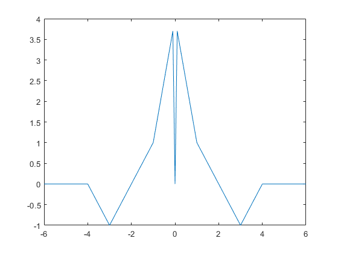
Entregable 1
Para el PR04 reporte la grafica de la simulación númerica de la convolución y compare con el resultado análitico que obtuvo para el problema 1 su práctica tendrá que incluir una llamada a la funciónn convconm y posteriormente se tendrá que mostrar (mediante el Publish) la gráfica tanto de las señales involucradas como el resultado de la convolución
La funcion Fija sera X(t)
La funcion Movil sera F(t)
F=@(t) 1*t.*(t>=-1 & t<1); X=@(t) exp(-t).*(t>=0 & t<=1); convconm1 (F,X);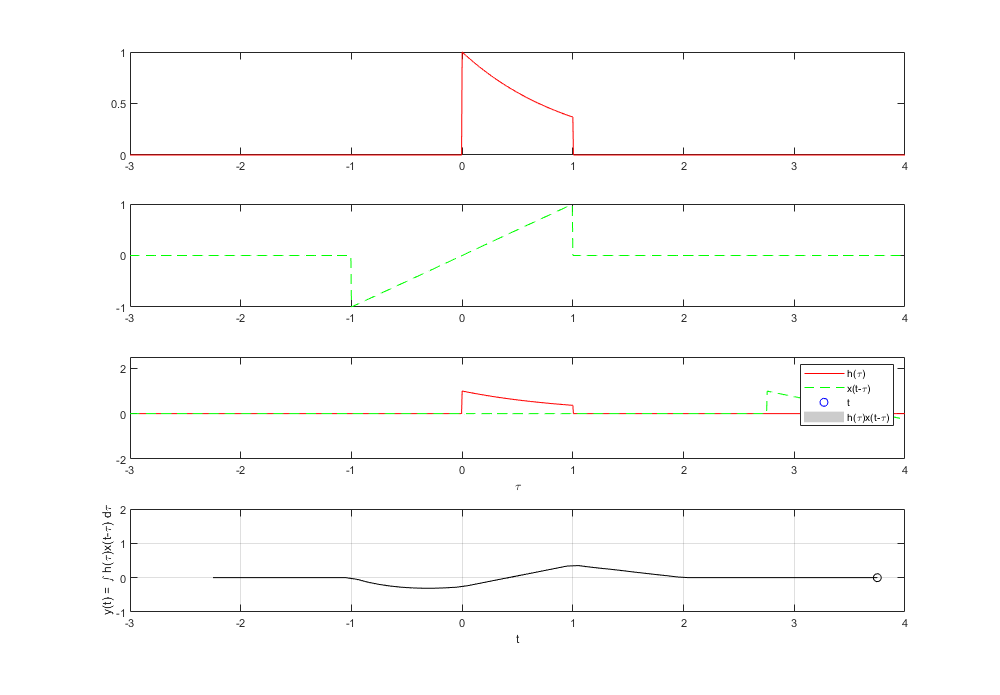

Entregable 2
Para el PR05 reporte la grafica de la simulación númerica de la correalción y compare con el resultado análitico que obtuvo para el problema e) su práctica tendrá que incluir una llamada a la funciónn convconm y posteriormente se tendrá que mostrar (mediante el Publish) la gráfica tanto de las señales involucradas como el resultado de su correlación, y en esta última graficara su resultado analitico, se tendrá que incluir el resultado analitico.
La funcion fija sera U(x)
L a funcion movil sera G(x)
G=@(t) (t>=1&t<3)+(-1.*(t>=3&t<4)); U=@(t) (-1.*(t>=-4 & t<-3))+(t>=-3&t<0); convconm(G,U);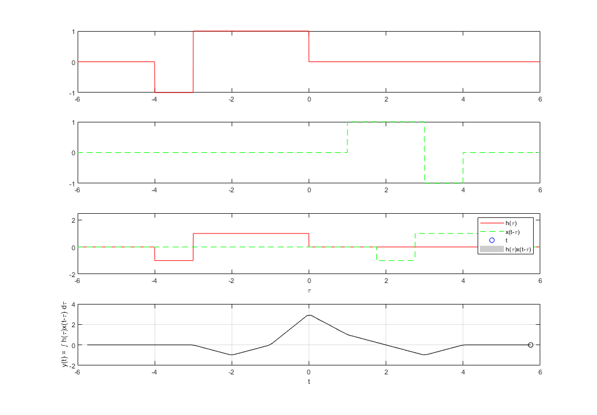

Entregable 3
Realice la simuación de la convolución de las señales (c) con (d) del problema 3.1.1
C(t) sera la funcion Fija D(t) sera la funcion Movil
n=-4:4; c1= [0 -9 -6 -3 0 3 6 9 0 ]; d1=[0 0 4 2 0 2 4 0 0 ]; convdisc1([n;c1],[n;d1]);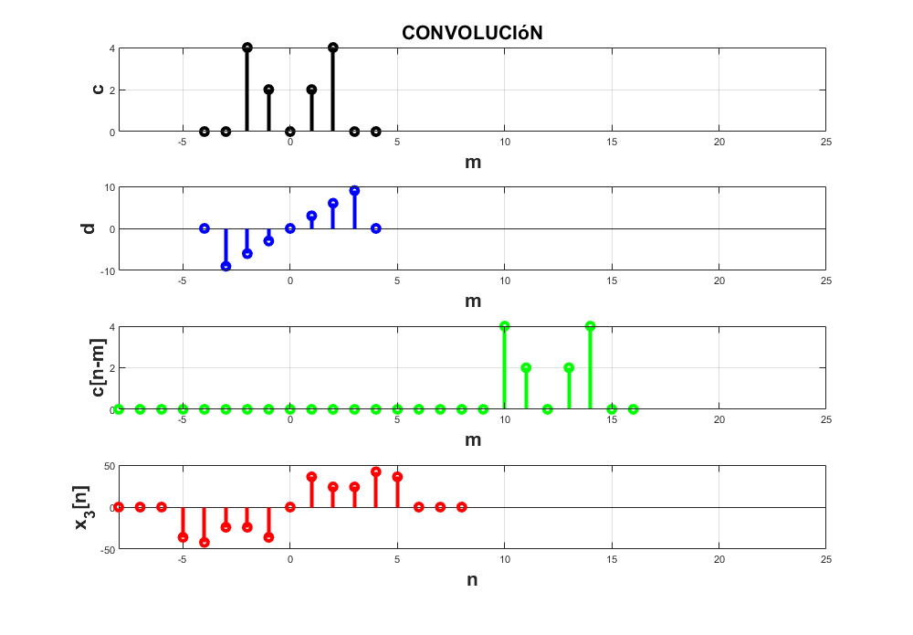

Entregable 4
Realice la simuación de la correlación de las señales (c) con (d) del problema 3.1.1
C(t) sera la funcion Fija
D(t) sera la funcion Movil
nc=-4:4; c2= [0 -9 -6 -3 0 3 6 9 0 ]; d2=[0 0 4 2 0 2 4 0 0 ]; convdisc12( [nc;c2], [nc;-d2] );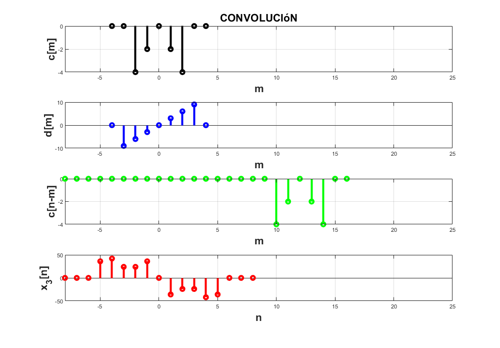

Entregable 5
Reaice la la convolución de las señales (c) con (d) del problema 3.1.1% utilizando el comando conv de MATLAB, muestre el código utilizado y gráfique el resultado, sugerencia: Utilice las propiedades de traslación de la convolución.
nc=-4:4; c3= [0 -9 -6 -3 0 3 6 9 0 ]; d4=[0 0 4 2 0 2 4 0 0 ]; y= conv (c3,d4) stem ([1 2 3 4 5 6 7 8 9 10 11 12 13 14 15 16 17],y)
y =
Columns 1 through 13
0 0 0 -36 -42 -24 -24 -36 0 36 24 24 42
Columns 14 through 17
36 0 0 0
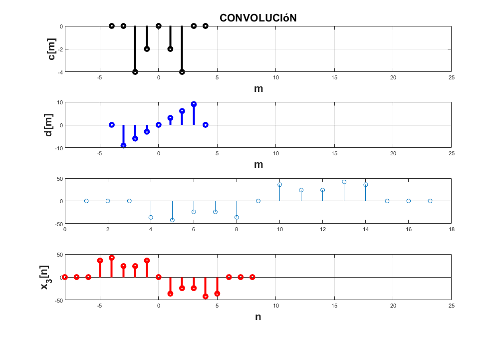